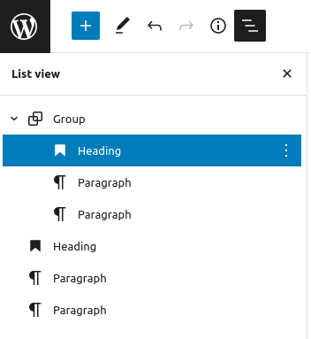
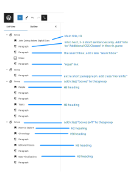

Overview of the Word Press Editor
Quick Visual Reference
Click the image below to see an overview of the various components of the Word Press Editor (WPE).
Blocks and Groups
Content in WPE is organized into blocks and groups. Examples of blocks are a paragraph, an image, a bullet list. Groups are simply containers that group together one or more blocks.
Creating Blocks
Blocks are easy to create, in fact all content is in some sort of block. Paragraphs are the most common block: as you type and hit enter, new paragraphs are created, much like in MS Word. Paragraphs can be changed into lists, quotes, or other block types by clicking the ¶ button and choosing a new block type; see the image at right. Another way to create blocks is to move your cursor careful between two blocks: this reveals a long blue line with a blue [+] that you can click to insert a new block:
Block Toolbar Reference
Click the image below to see a guide to the buttons on the block toolbar.

Creating Groups (page sections)
By collecting blocks into Groups, we create sections that can be styled; for example a sidebar or callout box. To create a group, place your cursor in a block, such as in the text of a paragraph. The toolbar for that block should appear above the top of the block. Then click the triple dot menu at the end of the toolbar and choose Group, as shown in the screenshot at right.
Navigating Groups
When your block is in a group, the very first button of the toolbar changes to look like a pair of boxes: . Clicking this new button will draw a blue box around all the blocks in a group; use this to help you see what the group contains. You can also see the structure of groups and their blocks as an outline using the List view. To see the list view, open it with the left-most button in the top-most WPE toolbar on the page ; it is to the right of the (i) info button and looks like three lines in a stair step layout.
List view
The list view is a great tool for organizing the content on your page. You can use it to see how blocks are grouped, and as you click on elements in the list view, the main content view jumps to focus on the group or block you select. You can also drag and drop blocks to rearrange them, for example if you have a paragraph in the wrong group. Each item in the list view also has a triple dot menu to the right; click this for more options, such as to duplicate a block, delete a block, or create a new group.
Styling Groups
You can affect the layout and style of different sections of your page by grouping blocks together and then assigning classes to that group. Classes are simply the internal labels that designers use to tell the browser how to style things. You can only use classes that have been setup by the Coop's designers, or that might be customized in your projects own stylesheets.
NOTE: to style the home and about pages, see the next section.
To enter a class for a group, you first need to group together blocks (see the section "Creating Groups").
Classes for enhancing WPE Groups
Layouts
- boxes This layout builds boxes that are placed side by side. It works like this: for each H3 heading it finds, it grabs all the blocks after that heading until the next H3 and wraps those blocks in a box. The H3 becomes the heading for the box. You can hide the H3 heading itself by giving it the class "hidden".
- full-bleed If you insert an image as the first block in this group, the image will be used as a full bleed background for the group.
- feature-image-left This layout takes the first image in the group and places it on the left, so that following text floats up next to it on the right-hand side.
Colors
- soft this colors the background of the entire group with a light gray. Text remains black.
- dark this colors the background of the entire group in a very dark gray or black. Text becomes white.
- accent-light this colors the background of the entire group in a light color of a hue that fits the theme. Text remains black.
- accent-dark this colors the background of the entire group in a dark color of a hue that fits the theme. Text becomes white.
Styling Blocks
Blocks can be styled just like groups, also using the "advanced" section of the Word Press Editor sidebar.
To create a set of links that are button-like, arranged horizontally, create a list block, and give it the class "biglinks". Each item in the bullet list should be a link.
Home Page & About Page Group Settings
The following graphics show how the blocks for the home and about pages should be grouped. It also indicates what css classes the groups or blocks should have in order to create the basic Coop style and layout.
Home Page
About Page
Page settings
Along the right-hand side of each page is a panel that has settings, including for the whole page, as shown in the screenshot at right. There are a few important settings to, um, set, before getting too far along in adding content.
Page template
Use the drop-down in the settings panel to select a template. The default template template is good for most pages, but for pages that focus on a person, use the Person Page Template. The Home Page Template should only be used for the single homepage of your project.
URL Slug
Don't know why WPE calls it a slug, but this setting is the part of the URL for your page after www.primarysourcecoop.org/[your project initials]/ . You can see how the link will appear in the browser location bar right below where you enter the "slug".
Tips & Tricks
Inserting Blocks If you need to insert a block, one way is to add it at the end of your page, and then use the toolbar arrows to move it up or down as needed.
In the WPE you can SHIFT-click to select multiple blocks, and group them from the : menu.
You can Create new blocks using the blue square [+] button top left; NOTE that most of the block types and patterns under the blue square [+] have not been tested with our design. If you want to try these, better to try them on a test page first.